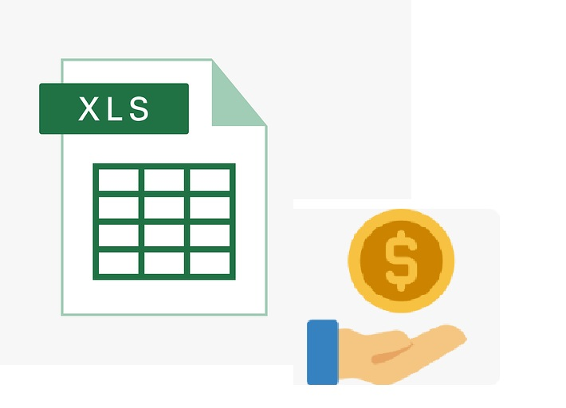
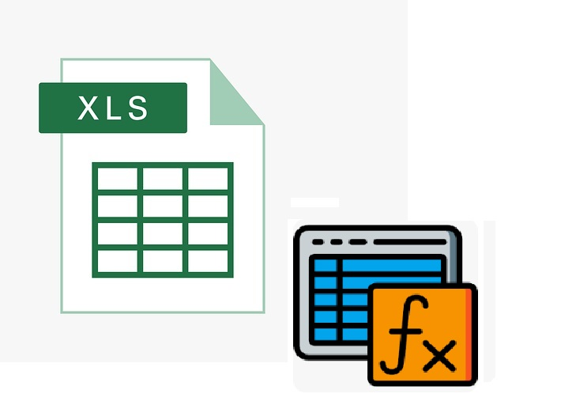
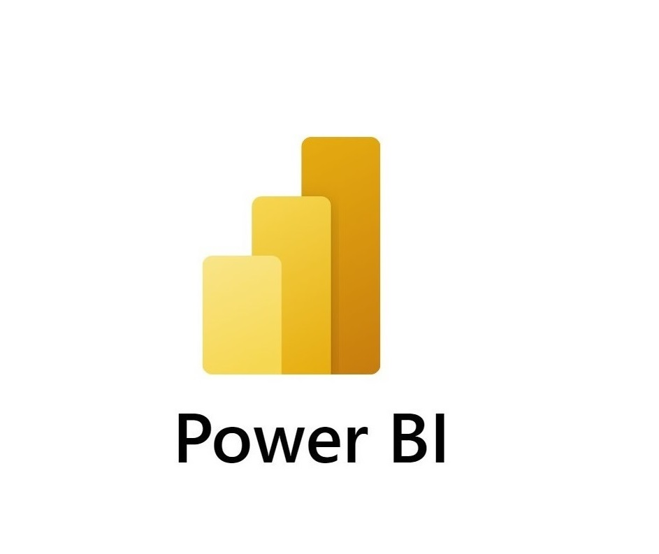

Tamires Camargo Soares
Analista Administrativa | Especialista Financeira | Desenvolvedora Front-End | Web Design
Breve Apresentação
Profissional versátil e dinâmica, formada em administração de empresas, pós-graduada em MBA gestão de produção e cursando tecnologia. Atuei nas áreas administrativa, financeira, comercial, fiscal e atendimento ao cliente. Adquirindo experiência com controles gerenciais financeiros; faturamento; lançamentos contábeis; escrituração fiscal; cadastro e homologação em sistema SAP Ariba, entre outros. Possuo também vivência em mapeamento de processos e detalhamento de procedimento de operações padrão. Conhecimento avançado em Excel e Power BI. Acesse abaixo os modelos disponíveis de planilhas e dashboard.
Atualmente realizo o curso de Desenvolvedor Full Stack Python, pela plataforma da EBAC com objetivo de aprimorar a prática na área de tecnologia, criação e desenvolvimento com aprendizado em linguagem de programação MySQL, HTML, CSS, Javascript e banco de dados, ERP. (Inclusive esta página é parte desse trabalho o qual me orgulho muito em dizer!!)
Idioma: Inglês em nível intermediário.
Habilidades comportamentais: Atenção analítica e focada, organização, autodidata, facilidade de trabalhar em equipe, boa comunicação e criatividade.

Visite meu perfil no Linkedin
Rotinas Administrativas
Grande parte do meu histórico profissional se concentra na área de finanças, onde tive a oportunidade de atuar durante bastante tempo executando atividades do contas a pagar e contas a receber, controle de fluxo de caixa, conciliação bancária e apurações financeiras para diretoria.
Como resultado sempre entreguei um trabalho de qualidade, implementando melhorias no processo e disponibilizando ferramentas para tomada de decisão.

Tecnologia
Busco estar em constante atualização e gosto de efetuar pesquisas diversas para obtenção de soluções criativas. Creio que estas características têm contribuido bastante para meu desenvolvimento técnico na área.
Tenho empenhado muita dedicação neste processo de aprendizado das linguagens de programação Front-End e Back-End, pois afinal este é um horizonte onde espero encontrar grandes oportunidades para executar com excelência novos talentos e habilidades.

Gestão de Processos e Metodologias
Visando agregar qualidade no desenvolvimento das minhas tarefas, busquei conhecimento das metodologias Lean Seis Sigma, ciclo PDCA e DMAIC. Como parte deste esforço, efetuei cursos para entender melhor o gerenciamento de projetos, Passando a entender assim a metodologia Ágil e o Scrum Product Owner.
Trabalho Em Equipe
Decidi dedicar um tópico a este assunto na minha página de apresentação, pois acredito fortemente que esta é a base de um trabalho bem-sucedido.
Uma equipe forte é constituída por pessoas que entenderam à importância de sua colaboração de forma coletiva e têm consciência que seu trabalho impacta e é impactado pelo trabalho do próximo.
Livro Sobre o Agronegócio
Autora do livro “Estratégias que agregam valor nos segmentos do Agronegócio no Brasil”. (Editora NEA, 2017.)
Este é um dos tópicos mais especiais para mim e não foi por acaso que me dediquei tanto a este assunto a ponto de escrever um livro! Alguns anos já se passaram desde a data da publicação do meu livro, mas ainda hoje percorro por notícias acerca do agronegócio com o mesmo fascínio.
O agronegócio tem importância vital para a economia brasileira. Compõem esta obra a análise de variáveis macroeconômicas, estudos do ambiente de negócios e apresentação de dados estatísticos; tudo em um formato fundamentado em casos reais, boas práticas e indicadores relevantes do setor.
Curiosidade: o livro foi escrito a partir de um artigo que publiquei com o mesmo tema, a seguir disponibilizo o link de acesso ao material compilado do artigo!
Acesse o Artigo!


Esta seção é dedicada a apresentação de alguns modelos de planilhas automatizadas, incluindo formulas, gráficos, tabela dinâmica, macros VBA e demonstrativos gerenciais no formato padrão que se espera de uma base de dados contendo valores.
-
Modelagem Financeira

Download do arquivo -
Formulas e Macros VBA

Download do arquivo -
Dashboard em Power BI

Download do arquivo